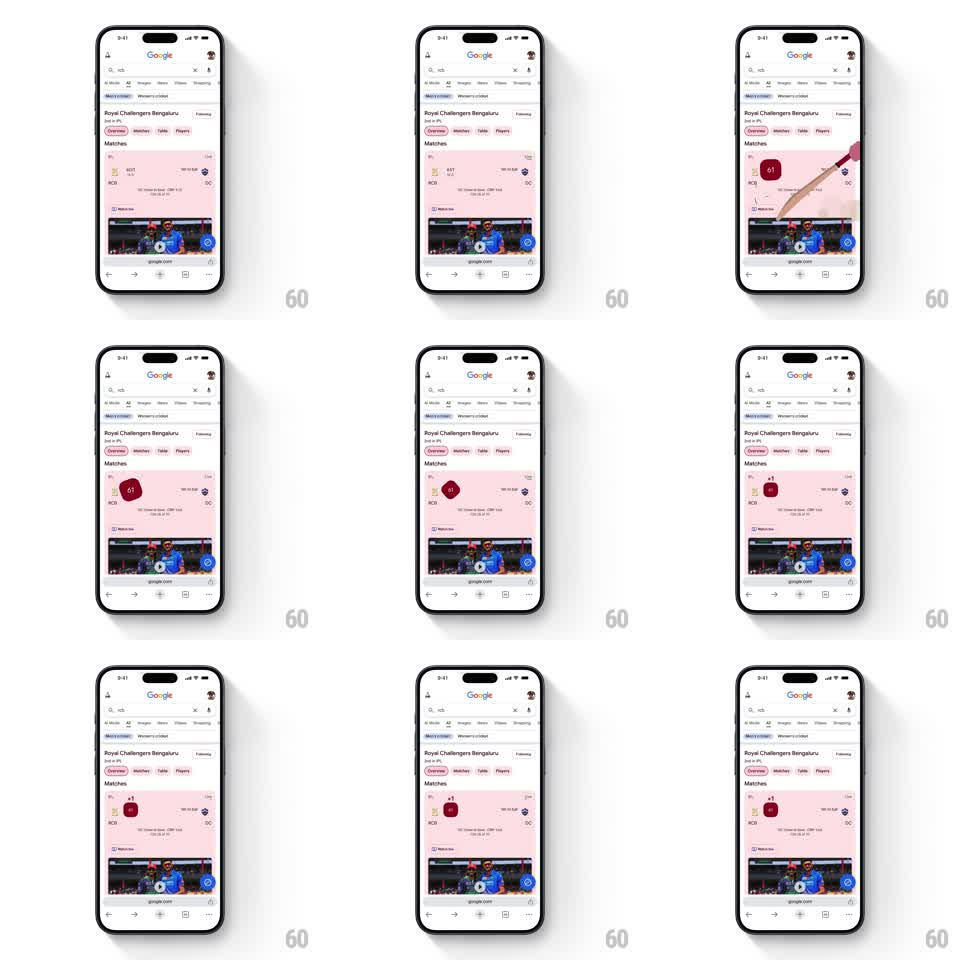

Media
Frame-by-frame

Rebuild this animation 1:1: Chrome's live cricket score easter egg - on a match results card, a red cricket ball bounces in from the edge and settles over the score area with a soft spring, sitting on the card like a sticker while live scores update.

Rebuild this animation 1:1: Chrome's live cricket score easter egg - on a match results card, a red cricket ball bounces in from the edge and settles over the score area with a soft spring, sitting on the card like a sticker while live scores update. ## Integration Integration: stack-agnostic spec - springs given as stiffness/damping, timed motions as duration + curve; map every value to your framework and animation library of choice. ## Scene Google search results for a cricket team: match card (pink-tinted) with team rows, scores, "Live" badge. A red cricket ball (stitched, glossy) arrives and parks on the card near the score. ## Motion spec Pattern: entrance + idle. - The ball enters from the right edge with an arc (translate + slight rotate, 500ms, ease-out) and bounces twice on landing (translateY: -20px -> 0 -> -8px -> 0, 400ms total, decreasing). - It settles with a final springy rotate (~10deg unwind, 250ms). - Idle: the ball does a slow subtle rock (rotate +-3deg, 4s) and its glossy highlight shifts with the rock. - Score text updates tick with a small highlight flash (300ms) independent of the ball. ## Calibration - Two bounces, decreasing height - one bounce reads as a drop, three reads as a toy. - The ball is a rendered object (stitching, specular), not a flat emoji. ## Reduced motion Ball fades into its final position (200ms); no idle rock. ## Don't miss - The ball overlaps the card edge slightly - a sticker, not an inline icon. - Its shadow is painted on the card, moving with the bounces.